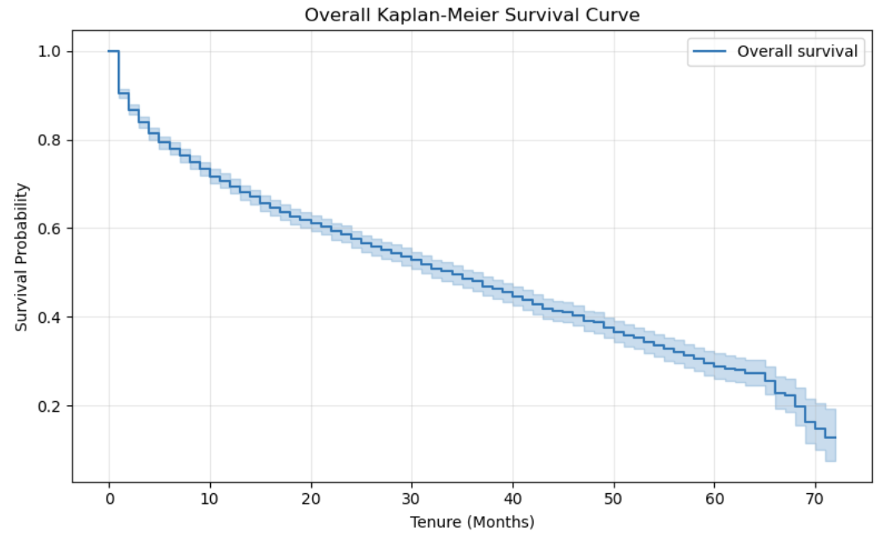
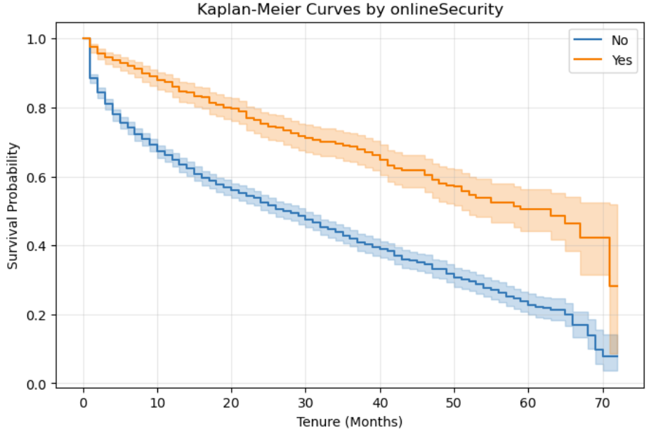
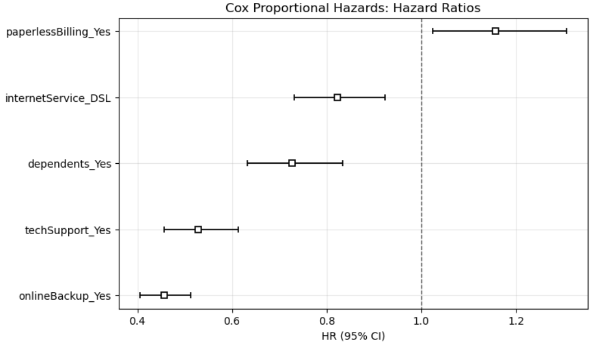
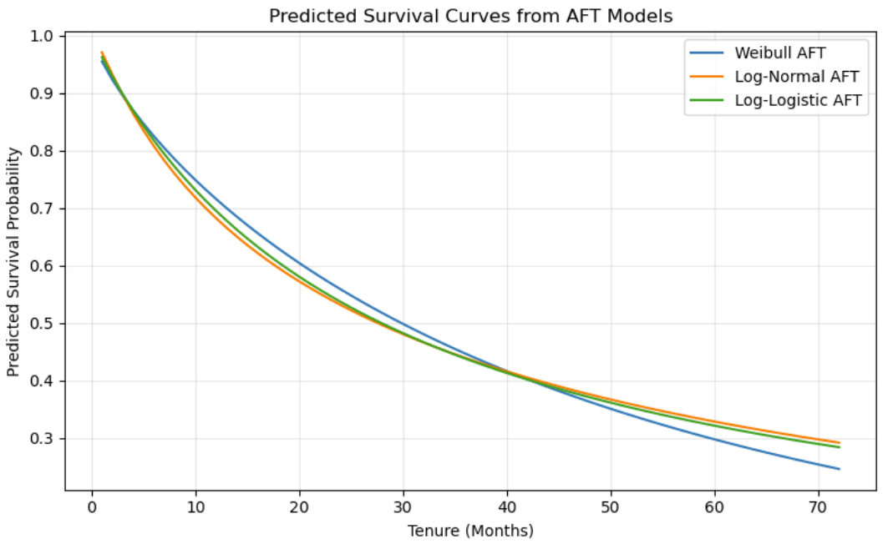

Blog
Survival Analysis and Text-to-SQL Experiments on Telco Customer Churn Data
Project Background
In this project, I studied the Telco Customer Churn dataset from two complementary perspectives. First, I treated customer churn as a time-to-event problem and applied survival analysis methods. Second, I built a MySQL database and tested whether an LLM could generate correct SQL for analytical questions.
Dataset and Objective
The original dataset contains 7043 customer records. In the survival analysis part, I followed the official tutorial and focused on customers with month-to-month contracts and active internet service. The main objective was to understand how customer retention changes over time and which service-related factors are associated with higher or lower churn risk.
Dataset and Preprocessing
The original IBM Telco Customer Churn dataset contains 7,043 customer records. In this survival analysis, customer churn was treated as the event of interest, and customer tenure was treated as the survival duration measured in months. Following the official tutorial, I focused on customers with month-to-month contracts and active internet service.
| Item | Value |
|---|---|
| Original records | 7,043 |
| Filtered analysis sample | 3,351 |
| Churn events | 1,556 |
| Right-censored observations | 1,795 |
| Time variable | tenure |
| Event variable | churn_num |
Kaplan-Meier Survival Analysis
I first used the Kaplan-Meier estimator to describe the overall retention pattern. The survival curve shows that customer retention decreases steadily as tenure increases. In the filtered subgroup, the estimated median survival time was approximately 34 months.

I also compared survival curves across service-related groups. Customers with online security showed a clearly higher survival probability than customers without online security, suggesting that service protection features are associated with longer customer retention.

Cox Proportional Hazards Model
The Cox proportional hazards model was used to estimate how customer features affect the instantaneous risk of churn. The model achieved a concordance index of about 0.643, indicating moderate predictive discrimination.
The results show that online backup and tech support were associated with substantially lower churn hazard, while paperless billing was associated with a slightly higher churn hazard. In other words, service support variables appear to be more important than basic demographic variables in explaining churn risk.

Accelerated Failure Time Models
To complement the Cox model, I fitted three parametric Accelerated Failure Time models: Weibull AFT, Log-Normal AFT, and Log-Logistic AFT. These models describe how covariates accelerate or decelerate the expected survival time instead of directly modeling the hazard ratio.
| AFT Model | AIC |
|---|---|
| Log-Normal AFT | 14126.90 |
| Log-Logistic AFT | 14201.88 |
| Weibull AFT | 14215.99 |
Since a smaller AIC indicates a better fit, the Log-Normal AFT model performed best among the three candidates. The AFT results were broadly consistent with the Cox model: online backup and tech support were associated with longer customer survival time.

Main Findings
- The median customer survival time in the filtered subgroup was about 34 months.
- Service-related variables such as online backup, online security, and tech support were strongly associated with customer retention.
- Paperless billing was associated with a slightly higher churn risk in the Cox model.
- The Cox model provided interpretable hazard ratios, while AFT models provided a complementary time-ratio perspective.
- Among the tested AFT models, the Log-Normal AFT model achieved the lowest AIC.
Text-to-SQL Experiments
In the second part of the project, I created a MySQL database named
survival_analysis_q23 and imported the Telco Customer Churn dataset
into a table named telco_customer_churn. I then used an LLM to generate
SQL queries from natural language questions and compared the generated SQL with
manually corrected SQL.
The model was able to handle simple aggregation questions, such as computing average tenure by internet service type. However, it became less reliable when the query involved categorical value semantics, grouped median calculation, or nested aggregation baselines.
mWebsite Deployment
This blog was deployed using GitHub Pages with a custom domain obtained through
the GitHub Student Developer Pack. The repository used for deployment is
yuke1010.github.io, and the custom domain is
www.yuke1010.page.
I configured the custom domain in the GitHub Pages settings and added DNS records
in Name.com, including a CNAME record for the www subdomain and
GitHub Pages A records for the apex domain. After DNS propagation, the blog was
successfully published with HTTPS enabled.
What I Learned
This project helped me understand that statistical modeling and LLM-assisted data analysis serve different roles. Survival analysis offers an interpretable framework for understanding customer churn over time, while LLMs can help draft SQL queries but still require careful human verification.
Conclusion
Overall, this project combined survival analysis, database construction, and text-to-SQL evaluation in one workflow. It showed both the value of formal statistical methods and the practical limitations of current LLMs in structured analytical tasks.